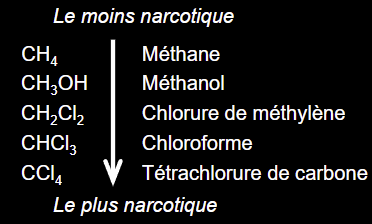
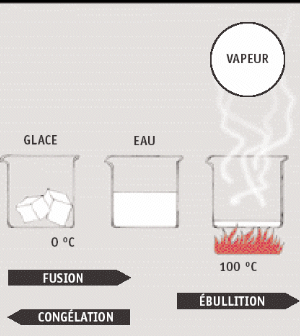
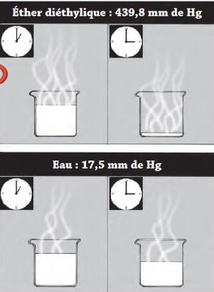
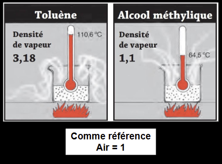
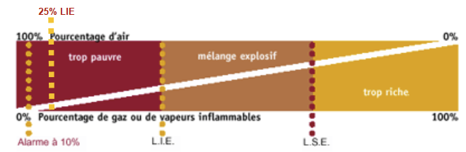
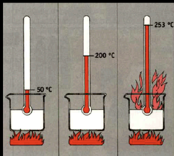
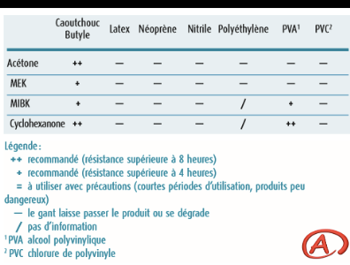

Solvants organiques
Les solvants organiques (50 % du marché en peintures et revêtements) pénètrent par les trois voies (respiratoire surtout, mais cutanée souvent sous-estimée). Effets génériques : narcotique sur le SNC (aigu) et neurotoxique/hépatotoxique (chronique). Effets spécifiques par famille : benzène (leucémie), hexane (axonopathie), CCl4 (foie), TCE (rein), CS2 (athérome). Dangers physiques importants (inflammabilité). En mine, l'atelier mécanique, la peinture et la maintenance hydraulique concentrent l'exposition.
Table des matières
- Définitions et usages
- Pénétration, biotransformation, élimination
- Effets sur la santé
- Propriétés physico-chimiques clés
- Familles de solvants
- Substitution
- Application terrain
- Ressources
Définitions et usages
Solvant = substance capable de dissoudre une autre substance pour former une solution homogène.
- Aqueux (base d'eau) ou organiques (base d'hydrocarbures). La plupart des solvants industriels sont organiques.
Usages
- Peintures et revêtements (~50 % du marché).
- Dégraissage industriel.
- Décapage.
- Adjuvants en chimie et plasturgie.
- Extraction (industrie pharmaceutique, agroalimentaire).
- Nettoyage à sec (perchloréthylène).
- Diluant, purifiant.
Pénétration, biotransformation, élimination
Voies de pénétration
| Voie | Importance |
|---|---|
| Respiratoire (vapeurs) | Principale ; favorisée par la volatilité |
| Cutanée | Souvent sous-estimée ; les solvants dégraissent le sébum et facilitent leur propre absorption + celle d'autres toxiques |
| Digestive | Accidentelle (mauvaise hygiène, déglutition de vapeurs) |
Biotransformation
Principalement au foie (CYP450). Conséquences possibles
- Détoxification : transformation en métabolites facilement éliminés.
- Bioactivation : production de métabolites plus toxiques (par exemple n-hexane → 2,5-hexanedione neurotoxique ; CCl4 → radical trichlorométhyle hépatotoxique).
- Compétition : co-exposition à plusieurs solvants peut modifier la toxicité.
Élimination
- Voie respiratoire (vapeurs non métabolisées, alcool éthylique, acétone).
- Voie urinaire (métabolites conjugués, base des IBE solvants).
- Si dose absorbée trop grande, les mécanismes sont débordés → accumulation et toxicité.
Effets sur la santé
Aigus (forte exposition)

Toucher l'image pour l'agrandir| Effet | Mécanisme |
|---|---|
| Narcotique sur SNC | Liposolubilité → diffusion vers cerveau ; sensation d'ivresse, vertiges, céphalées, nausées ; perte de conscience, coma à fortes doses |
| Irritation cutanée et muqueuses | Dégraissage de la peau, dermatite irritative |
| Œdème pulmonaire | Irritants forts à haute concentration |
| Troubles du rythme cardiaque | Sensibilisation du myocarde aux catécholamines (chlorés surtout) |
Chroniques
| Effet | Solvants typiques |
|---|---|
| Syndrome psycho-organique (SPO) | Solvants aromatiques, mélanges (peintres) |
| Neuropathie périphérique | n-hexane, CS2, méthyl-n-butyl cétone |
| Atteinte cochléaire (ototoxique) | Toluène, styrène, xylène ; voir Multiexposition aux contaminants |
| Hépatotoxicité | CCl4, chloroforme, chlorés en général ; voir Hépatotoxicité et néphrotoxicité |
| Néphrotoxicité | TCE, PCE, hydrocarbures aliphatiques |
| Médullotoxicité, leucémie | Benzène (CIRC 1) |
| Cancer | Benzène (leucémie), TCE (rein, CIRC 1), formaldéhyde |
| Dermatose chronique | Tous les solvants liposolubles dégraissants |
Propriétés physico-chimiques clés

Toucher l'image pour l'agrandir
Toucher l'image pour l'agrandir
Toucher l'image pour l'agrandir| Propriété | Signification SST |
|---|---|
| Densité | Liquide plus lourd ou plus léger que l'eau (déversements) |
| Point d'ébullition | Volatilité, conditions d'utilisation |
| Tension de vapeur | Aptitude à passer en phase vapeur ; déterminante pour l'inhalation |
| Taux d'évaporation | Vitesse de mise en vapeur |
| Densité de vapeur | Vapeur plus lourde que l'air = stagnation au sol (Entrer dans un espace clos en sécurité) |
| Coefficient de partage octanol/eau (Kow) | Liposolubilité ; absorption cutanée, BHE, stockage tissu adipeux |
| Point d'éclair | Température min. où les vapeurs forment un mélange inflammable. Critère SIMDUT et classes de danger liquides inflammables |
| LIE / LSE | Limites inférieure / supérieure d'explosivité (% volume) |
| Température d'auto-ignition | Combustion sans flamme |

Toucher l'image pour l'agrandir
Toucher l'image pour l'agrandirVoir Gaz et vapeurs pour la mesure.
Familles de solvants
Hydrocarbures aliphatiques
| Sous-famille | Exemples | Toxicité, dose-réponse et DL50 notable |
|---|---|---|
| Alcanes | n-hexane, heptane, pentane | n-hexane → 2,5-hexanedione, axonopathie |
| Alcènes | Éthylène, propylène | Faible toxicité aux conc. d'exposition |
| Cycloalcanes | Cyclohexane | SNC |
Hydrocarbures aromatiques
| Solvant | Toxicité |
|---|---|
| Benzène | Médullotoxique, leucémie myéloïde aiguë (CIRC 1). VEMP très bas |
| Toluène | SNC, ototoxique, reproduction (catégorie reproduction R), abus inhalation (sniff) |
| Xylène | SNC, ototoxique |
| Éthylbenzène | SNC, oreille interne, CIRC 2B |
| Styrène | SNC, ototoxique, CIRC 2A (lymphomes, leucémies) |
Solvants halogénés (chlorés, fluorés)
| Solvant | Toxicité |
|---|---|
| Tétrachlorure de carbone (CCl4) | Hépatotoxique majeur (radical libre), cancer foie |
| Chloroforme | Foie, rein |
| Trichloréthylène (TCE) | Cancer rénal (CIRC 1), SNC, hépatotoxique |
| Tétrachloréthylène (perchloro, PCE) | Foie, rein, SNC, cancer suspect |
| Dichlorométhane | Métabolisé en CO (HbCO), SNC |
| Chlorure de méthyle, vinyle | Vinyle = angiosarcome foie (CIRC 1) |
| HFC / HFO | Substituts modernes ; toxicité variable |
Alcools
Méthanol (acidose, cécité par formate), éthanol (SNC, foie), isopropanol (SNC). Souvent moins toxiques que les chlorés ou aromatiques.
Cétones
Acétone (très hydrosoluble, SNC, irritation), méthyléthylcétone (MEK), méthylisobutylcétone (MIBK). Effet de potentialisation MEK + n-hexane (renforcement neuropathie).
Esters et éthers
Acétates (éthyle, butyle), éthers de glycol (certains tératogènes pour la repro : EGME, EGEE).
Aldéhydes
Formaldéhyde : irritant, sensibilisants, cancer nasopharynx + leucémie (CIRC 1). Glutaraldéhyde : sensibilisant.
Amines
Diéthylamine, triéthylamine : irritants, Sensibilisants respiratoires et cutanés. Aniline : méthémoglobinémie.
Sulfure de carbone (CS2)
Industrie viscose ; neuropathie, athérome accéléré, troubles psy. Cas-école d'effet cardiovasculaire d'un solvant.
Mélanges pétroliers
White spirit, naphta, kérosène, essence : composition variable, neuropathie, irritation, danger par aspiration.
Substitution

Toucher l'image pour l'agrandirTendance : remplacer les solvants à fort risque toxicologique ou cancérogène par
- Solvants aqueux (peintures à l'eau).
- Solvants biosourcés (terpènes, esters d'acides gras).
- Procédés sans solvant (poudres, UV).
- Substitution intra-famille : toluène → xylène moins toxique ; perchloréthylène → modified alcohols.
Démarche STEPS (Solvent Selection Tool, GSK), SUBSPORT, COSHH Essentials.
Application terrain
Les solvants en mine sont concentrés dans certains lieux et certains métiers
| Lieu / activité | Solvants typiques | Risque dominant |
|---|---|---|
| Atelier mécanique poids lourd | Dégraissants chlorés (historiques) ou hydrocarbures, naphta, MEK | SNC aigu, neuropathie chronique, dermatose |
| Cabine de peinture (engins, structures) | Diluants, isocyanates (durcisseurs), white spirit | SNC, sensibilisation respiratoire |
| Maintenance hydraulique | Solvants nettoyants, biocides | Cutanée, sensibilisation |
| Atelier électrique / électronique | Isopropanol, contact cleaners | SNC, irritation |
| Salle d'instrumentation, laboratoire | Acétone, méthanol, toluène | SNC, hépatotoxicité (méthanol) |
| Carburants (diesel, essence) | Mélanges pétroliers, benzène trace | Danger par aspiration, leucémie (benzène trace) |
Substitution prioritaire en mine : éliminer les solvants chlorés (TCE, PCE) pour le dégraissage, passer aux peintures à l'eau quand l'application le permet, fermer les bains de dégraissage ouverts (ventilation locale aspirante). Les gants nitrile ne protègent pas longtemps contre les solvants chlorés ; gants butyle ou Viton requis selon le solvant.
Surveillance biologique des métaux en mine pertinente : acide hippurique (toluène), acide mandélique (styrène), TCE urinaire, MTBE pour l'éther. Audiogramme pour les postes à toluène/styrène + bruit.
Ressources
| Document | Type | Source |
|---|---|---|
| Annexe I RSST (VEMP solvants) | Règlement | LégisQuébec |
| Liste cancérogènes solvants (CIRC) | Référentiel | IARC |
| Tableaux compatibilité gants solvants | Référentiel | INRS, Ansell, fabricants |
| Procédure de substitution des solvants chlorés | Procédure interne | À développer |
Articles wiki connexes
- ADME, cheminement des contaminants dans l'organisme
- Toxicité du système respiratoire
- Neurotoxicité, hématotoxicité et toxicité endocrinienne
- Hépatotoxicité et néphrotoxicité
- Aspiration et dangers biologiques
- Multiexposition aux contaminants
- Métaux toxiques en milieu de travail
- Pesticides
- Gaz et vapeurs
Pages qui pointent ici (6)
- Asphyxiants simples et chimiques Toxicologie
- Aspiration et dangers biologiques Toxicologie
- Métaux toxiques en milieu de travail Toxicologie
- Pesticides Toxicologie
- SIMDUT et classes de danger Toxicologie
- Substances dangereuses Toxicologie